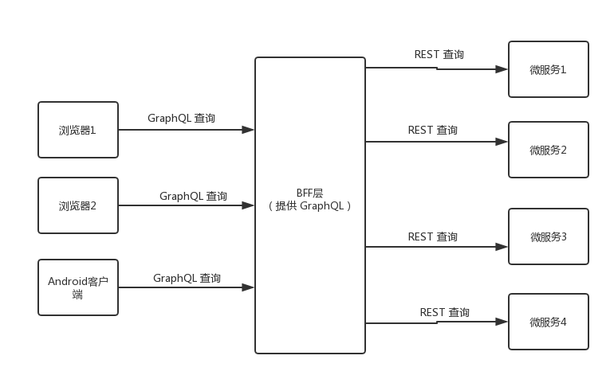
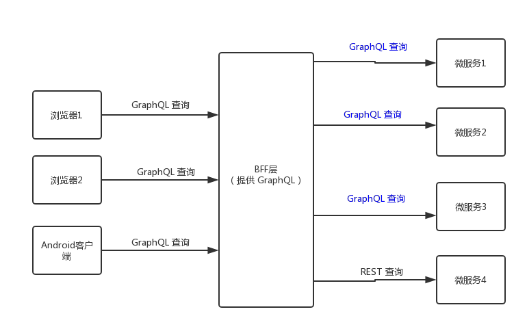

GraphQL：BFF架构资料 （兼谈合并多个 Schema 的方式）
最近正打算做 http://new.npuacm.info 的后端，研究了一下 GraphQL。在这里记录一下我所了解到的东西。我现在还没开始写后端，所以这里能写的也不多，等到网站做完之后，我可能还会补充一些东西。
BFF 架构
这个东西主要用在微服务架构中。废话不多说，见图：

详细的解释在 https://juejin.im/entry/5abca4416fb9a028b92d38dd 里面，我就不赘述了。另外，为了突出本文章的主题，我没有画缓存的部分，这部分内容可以直接在上文的链接中找到。
这个东西让前端开发人员很爽，然而并不能让后端开发人员感受到它的好处。自己写的还是 RESTful 的增删改查，还要额外写相应的 Schema。
最好的情况应该是这样的：每个微服务也使用 GraphQL 作为接口，BFF层读取所有的 GraphQL，将它合并到一起，形成一个统一的 Schema。这样的话相应微服务的后端就不用维护两套东西了，还能用 https://github.com/leangen/graphql-spqr 或者 https://github.com/graphcool/prisma 之类的东西直接生成 Schema。而一些老旧的API仍然可以使用 RESTful 作为接口，让 BFF 层调用。
现在的架构是这样的：

合并 GraphQL Schema
这个在 apollographql的文档 里已经写了，这里还有一个 DEMO 。不过这里并不叫合并（Merging），而是叫“缝合”（Stitching）。害得我找了半天_(:3」∠)_